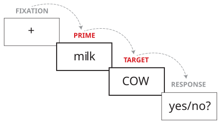

In the previous task, you might have noticed that the word pairs in condition A were always two words whose meanings are related to each other, such as MILK followed by COW. On the other hand, the word pairs in condition B were always two words whose meanings are not related to each other, such as WINDOW followed by TAKE. This is the most important aspect of a priming experiment. A priming experiment is always about comparing how people process words that come after related words, vs. words that come after unrelated words.
When we talk about priming experiments, we call the first word in the pair (e.g., MILK or WINDOW) the prime, and the second word (the word that the participant has to respond to by pressing a button) the target. So, for example, when someone in the experiment sees MILK and then COW, we would say they saw the target "COW" with a related prime. When someone in the experiment sees WINDOW and TAKE, we would say they saw the target "TAKE" with an unrelated prime.

In priming experiments we often want to know how quickly people respond to different kinds of targets (e.g., how quickly they respond to targets that came after related primes, and how quickly they respond to targets that came after unrelated primes). So, to do that, it's time for us to analyze your data.
Go back to the top of the "Experiment Complete" page and look at the six boxes there. The first row of boxes are labelled as "Mean Response Time (correct trials only)". "Response time" or "reaction time" is the name for a measurement of how quickly a participant reponded to some stimulus, in this case, words. We usually just abbreviate this as "RT". So what you are seeing in the boxes here are the average of all the RTs from each word you saw in each condition. Note that the title says "correct trials only". Think for a moment:
The answer is that when someone responds incorrectly to a real word, that means they probably didn't actually recognize that word. In that case, if we keep those responses, they aren't really telling us about that person's mental processes for word recognition. Another thing that often is true of incorrect responses is that they actually take a lot longer than correct responses. This might distort the average RT for the condition, making it seem like people take longer to recognize words than they actually do. So, most often, researchers will get rid of trials with incorrect responses before they compute the average RT, just like we did for your data in this case.
So, if you look at the two boxes with mean RTs for Condition A and Condition B, those are your main results for this experiment. Below that you'll see the average accuracy for the experiment as well, but actually, we aren't too interested in that for this experiment.
The next thing I want you to do is to enter your results here. After you've entered your results, you can view the class results here. By comparing with everyone's results, this will be a useful way to see the general trend across multiple people (for example, if 90% of people were faster for 'related' than for 'unrelated' and 10% were faster for 'unrelated' than 'related'), which is important in any empirical research.
When you have finished, continue to the reflection questions below.
Look at all the results entered so far in our Google spreadsheet. Based on the results so far, which kinds of targets would you conclude are responded to faster? (There may be a lot of different results on the spreadsheet. To make a conclusion, you might want to look at the average for related [by averaging across all students' "related" reaction times], compared to the average for unrelated [by averaging across all students' "unrelated" reaction times]. Or, you might want to count how many people were faster for related, and how many people were faster for unrelated.)
Thinking back to your answer about the previous question (which kind of target is responded to faster), why do you think this happens? What happens in a person's mind to make this happen?
When you have finished these activities, continue to the next section of the module: "Interim summary about priming" (to be COMPLETED BEFORE NEXT CLASS).
modified by Eric Pelzl; original content by Stephen Politzer-Ahles. Last modified on 2026-Sep-08. CC-BY-4.0.